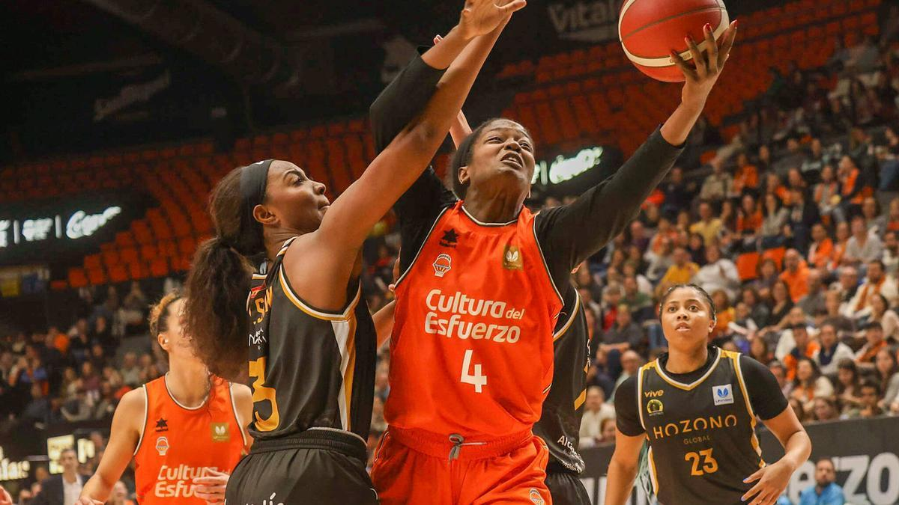
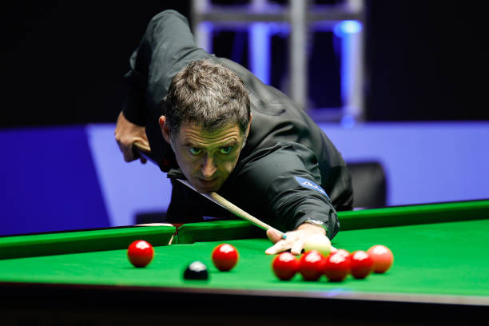

¿Qué encontraras en nuestra página web?
En nuestra página web siempre estarás al tanto de las últimas novedades del mundo del deporte.
Estarás al tanto de los deportes más reconocidos del mundo, con las noticias actualizadas al segundo,
con especial hincapié en el fútbol. Con nosotros siempre te enterarás el primero.

